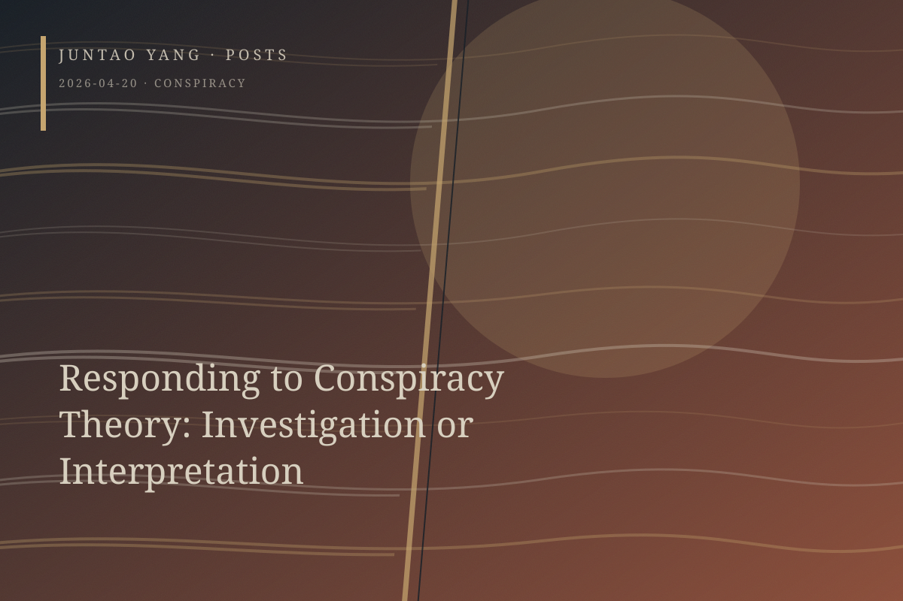

<content>
Conspiracy theory is usually placed within one of two analytic frames. The first is epistemological: is it true or false? The second is dynamic: why do people believe and circulate it? Adherents of these two epistemologies may carry opposing preunderstandings, one disposed to believe the conspiracy true, the other to reject it as false. Yet it is nearly impossible to exhaustively verify or falsify any particular conspiracy theory. Analysis of its mechanisms of circulation, meanwhile, can slip into a condescending diagnosis that reduces every conspiratorial utterance to a dynamics of desire and thereby cancels the ethical weight of the speaker. Should our understanding of conspiracy theory begin instead from a moral and practical question: how should we respond when someone speaks at the risk of their life?
Investigation and interpretation remain opposed as two postures.
Investigation presupposes that truth is an attainable object. Countless cases show that narratives once dismissed as conspiracy theories have later been verified in whole or in part. Conspiracy theory is not necessarily the groundless speculation of a mob; it is often a vernacular response to mysterious events within which power and interest have been asymmetrically distributed. In this sense, conspiracy theory works like kindling under water, continually driving the pursuit of truth. Investigation is not a verdict but an unfinished enterprise. It keeps methods in motion in order to render evidence more luminous and logic more exact. Yet this position may amount either to a gentle invitation for the once-expelled authority of reason to return—a Habermasian reversal—or to a utopian futility.
Interpretation concedes that truth may never arrive in a completed form. Falsifying one conspiracy theory will not eliminate the passion that produced it; that passion will simply capture another object. For believers, a particular conspiracy theory is a resource rather than a cause. The ontological feature of conspiracy theory—and perhaps of anything that refuses transparency—is precisely its unverifiability. Within this refined poststructuralist frame, what matters is no longer verification or falsification but an account of why the narrative is produced, circulated, and received in a particular way. Interpretation can therefore turn suffering, screams, wails, and lamentation into analyzable texts, dissolving the urgency of action in the refinement of theory.
I do not deny my sympathy with investigation. I suspect there is an ethical command here: when confronted by cries and lamentations, we are required to seek truth and correction. This moves the problem of conspiracy theory from the ground of “What can I know?” to that of “How ought I to respond?” Is this an evasion? I am not sure. Yet if many conspiratorial accounts originate with conscientious people who inadvertently touch the deepest secrets of those in power and risk their lives to transmit what they have found, how can we become worthy of their sacrifice?
The structure of this ethical demand is close to Levinas. The cry of the Other precedes my cognition and judgment, addressing me with a summons I cannot evade. Investigation is driven less by epistemological optimism—the faith that truth will finally come to light—than by the recognition that inaction would constitute betrayal. Investigation as practice also prevents ethical command from collapsing into sentimentality or being hijacked by any narrative sufficiently tragic, for investigation supplies a discipline of responsibility. The tension between them cannot be eliminated, and should not be.
</content>
April 20, 2026
Responding to Conspiracy Theory: Investigation or Interpretation
Investigation and interpretation offer rival responses to conspiracy theory, but the cry of someone risking a life to speak may impose an ethical demand prior to knowledge.
